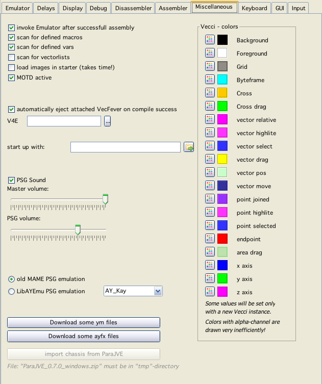
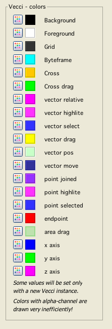

Miscellaneous config
invoke Emulator after successfull assembly
Well this is realy self explaining - isn't it?
scan for defined
If checked, vedi scans files for the entities, this allows displaying / coloring of defined and undefined variables/macros and allows the "right/doubleclick" on such an entity to jump to its definition.
scan for vectorlists
If checked, vecxi scans while running, whether BIOS vectrex routines draw a vectorlist, if so - vecxi saves the list in XML format, under the cartridge name.
load images in starter
If checked the starter table also displays the images for the vectrex binaries that are available. While this looks nice - upon starting all images will be loaded into memory which:
takes quite a few seconds
uses much memory
Default option is: off
MOTD active
Message of the day - active or not...
automatically eject attached VecFever on compile success
If you have a VecFever connected to the vectrex and your computer you have Vide eject the RAM disc of VecFever automatically after a build. The VecFever than starts the program called "cart.bin" that was saved to the RAM disk.
This feature as of now only works with Windows and Mac OS. I have at the moment not a running linux system and thus could not positively code an "eject" for linux.
V4E
Here you can enter the path to the attached vecfever device. If the path is entered correctly you can transfer any started vectrex program to the vecfever by simply doing a command line "tf" from dissi (if vecfever is in RAMD-disk mode).
Note:
As of now Vedi uses its own V4E definition... this is an open issue
start up with
A vectrex "bin" file, that should be loaded upon start of Vide.
Sound settings
PSG Sound
Switch whether PSG emulation is producing any sound (might switch off if you prefer to listen to sampled sound or VecVoice/VecVox).
Volume setting
With this you set the sound volume.
Master, the "overall" volume
PSG, value of th PSG soundchip (other sounds come from emulated samples/voice modules)
PSG Emulation
Chose between two different emulation implementations. If LibAYEmu is chosen, you can also chose between different PSG chip emulation variations.
Colors for vecci

vecci color settings